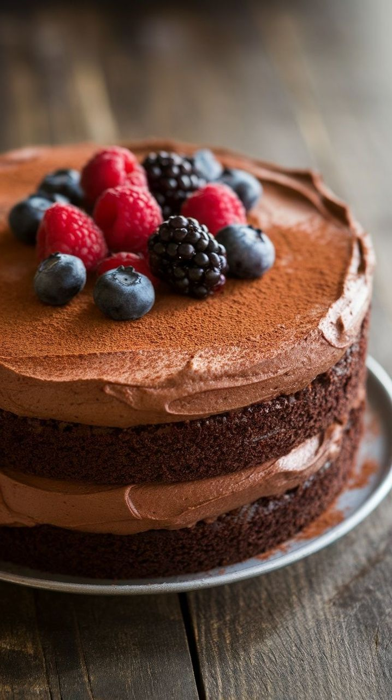
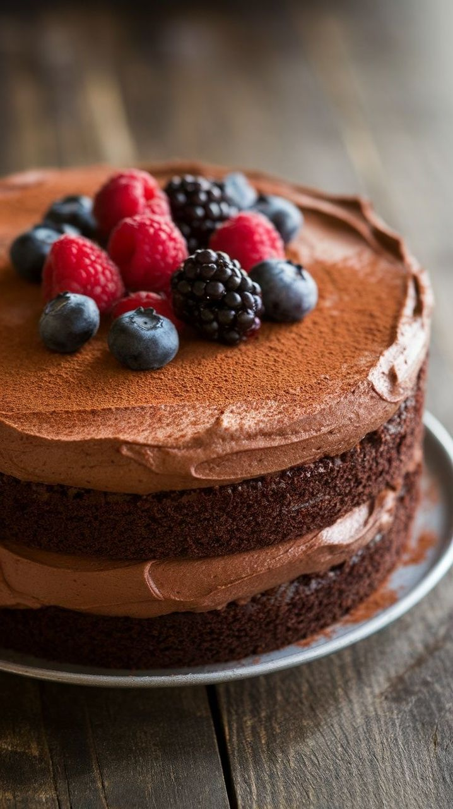
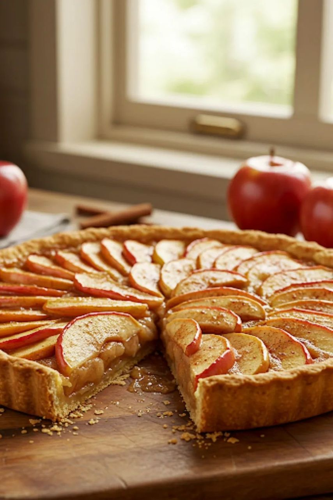
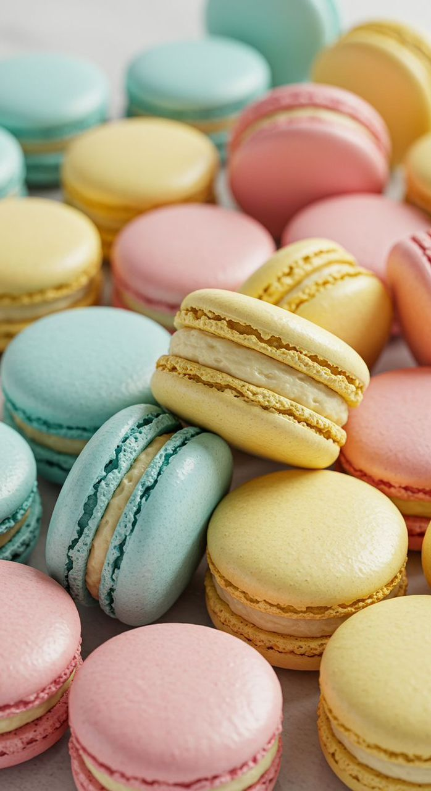
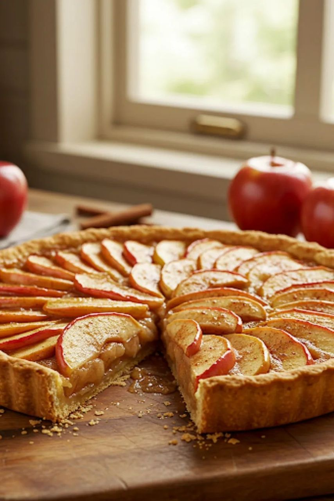
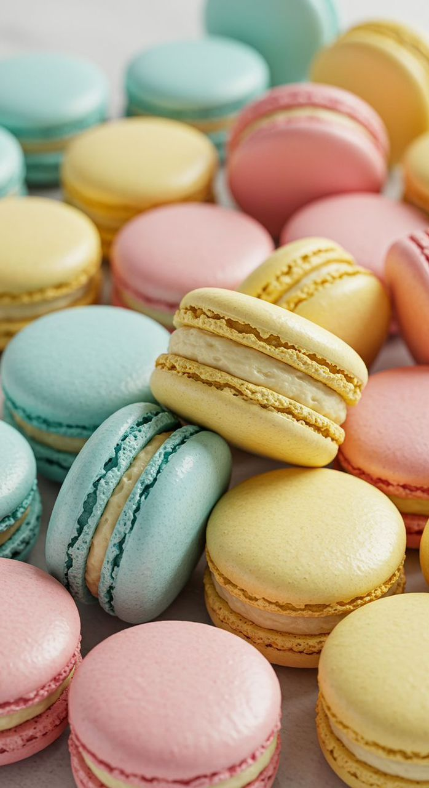

TREATS FOR ANY OCCASION
For more than 5 years, Marthapearls Cake and Treats has been making America’s favorite baked goods the new-fashioned way: from scratch, in small batches, and using the finest ingredients.
For more than 5 years, Marthapearls Cake and Treats has been making America’s favorite baked goods the new-fashioned way: from scratch, in small batches, and using the finest ingredients.
Marthapearls cakes and Treats spread quickly, and her business began to grow. She invested in a small storefront and hired a team of talented bakers to help her keep her demand. Marthapearls Cakes and Treats quickly became the go-to destination for special occasions in the community.
As the business expanded, Marthapearls continued to innovate and experiment with new flavors and designs. She introduced seasonal cake menus, featuring fresh fruits and ingredients, and collaborated with local businesses to create unique cake and coffee pairings.
 

 





“Absolutely delicious!”
“I ordered a red velvet cake for my daughter’s birthday, and it was hands down the best cake we’ve ever had! Moist, rich, and beautifully decorated. Everyone at the party asked where it was from!”
“Exceptional service!”
“I ordered a custom cake for our anniversary, and not only did it arrive on time, but it looked even better than the reference picture. They nailed every detail!”
“The taste is unbeatable!”
“I’ve tried cakes from many bakeries, but nothing compares to this one. The chocolate fudge cake was heavenly. Will definitely order again!”
“Beautiful & Tasty!”
“I ordered a unicorn-themed cake for my niece, and it was a showstopper. The design was flawless, and the cake tasted even better than it looked.”
“Highly recommended!”
“If you’re looking for fresh, flavorful, and artistically crafted cakes, look no further. I’ve ordered from them three times and they never disappoint.”
In the heart of a cozy little kitchen, where the scent of vanilla and warm cinnamon danced in the air, a dream was born — a dream that would later blossom into MARTHAPEARLS Cake and Pastry. The story began with Martha, a young woman whose love for baking started as a quiet hobby. As a child, she would sit on the counter beside her grandmother, Mama Pearl, who always baked with love and purpose. Mama Pearl didn’t just teach Martha how to whisk eggs or sift flour — she passed down a philosophy: “Baking is love made visible.” Her hands told stories through every pie crust, every layer of cake, every sprinkle of sugar. As the years went by, Martha never let go of those lessons. After school, she’d experiment in her tiny apartment kitchen, baking cakes for friends, neighbors, and family. People began to notice something special — not just in the taste of her pastries, but in how they made them feel. Her cakes brought comfort, joy, and a sense of home. It wasn’t long before her kitchen couldn’t contain her dreams anymore. With the blessing of her family and the memory of Mama Pearl guiding her, MARTHAPEARLS Cake and Pastry officially opened its doors. From the very first day, MARTHAPEARLS was more than just a bakery — it was a place of celebration. Every cake told a story, whether it was a child’s first birthday, a couple’s wedding day, or a simple moment of indulgence on a quiet afternoon. Each creation is handmade with the finest ingredients — real butter, farm-fresh eggs, and the kind of passion that can’t be measured in cups or grams. What started as a small neighborhood bakery quickly grew, thanks to glowing word of mouth and loyal customers who became part of the MARTHAPEARLS family. Social media helped too — beautiful photos of dripping chocolate ganache, fluffy whipped cream, and custom-designed cupcakes caught the attention of dessert lovers far and wide. Today, MARTHAPEARLS Cake and Pastry is known for more than just its delicious flavors. It’s celebrated for its artistic designs, customer-first approach, and ability to bring dreams to life in the form of cake. From intricately themed wedding tiers to playful character cakes for kids, MARTHAPEARLS delivers sweetness that goes beyond taste — it delivers memories. But Martha never forgot her roots. Every new recipe, every batch of cookies, every seasonal special still carries a hint of Mama Pearl’s wisdom. Her legacy lives on in every bite, and her spirit continues to inspire the MARTHAPEARLS team to bake with heart, passion, and purpose. As the journey continues, MARTHAPEARLS remains committed to one mission: To create moments of joy through handcrafted cakes and pastries — one sweet story at a time.